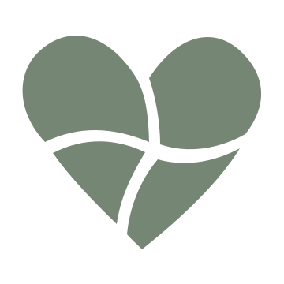
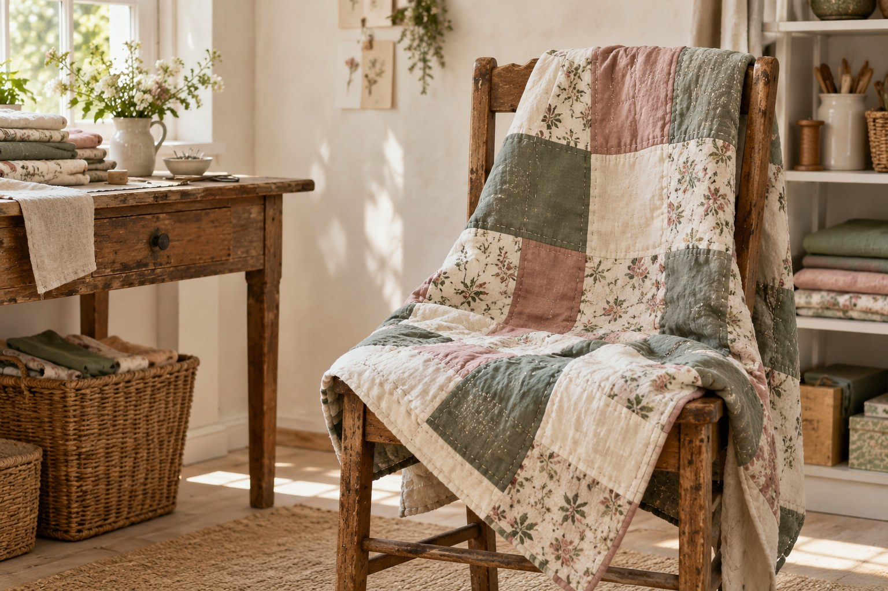
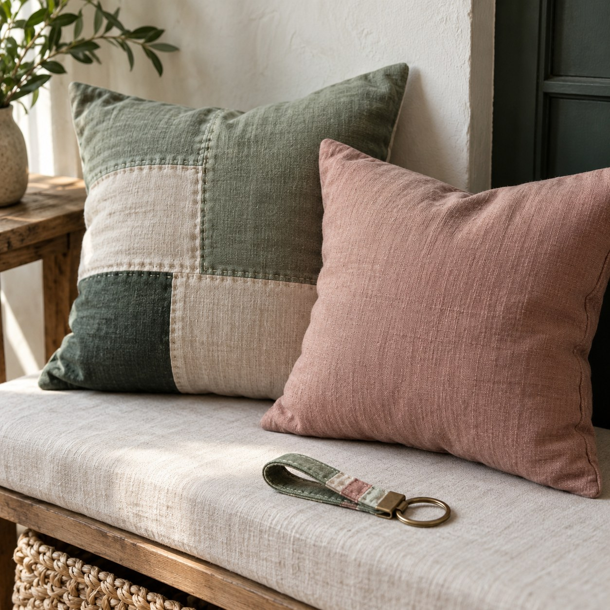
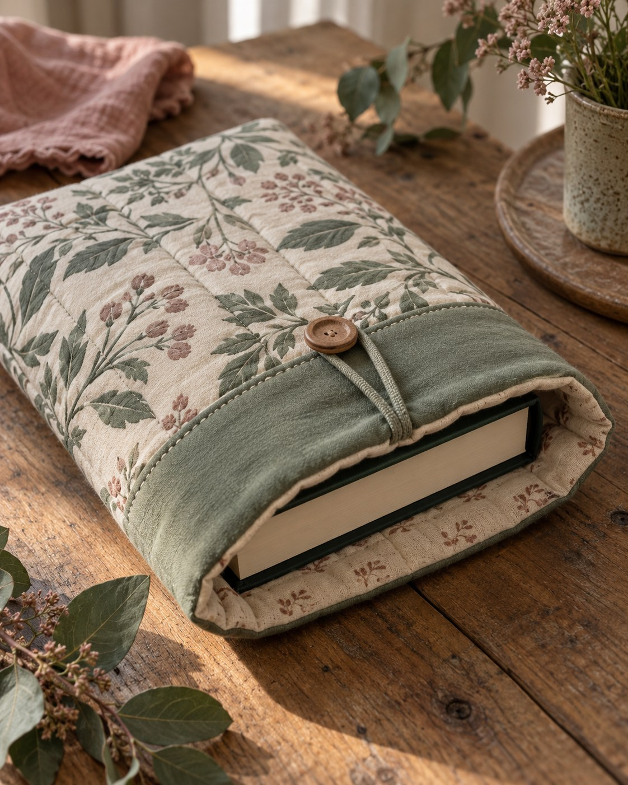

Patchwork-Decken
Ein Lieblingsplatz, ein gutes Buch und deine Decke.

Stoff. Zeit. Ein bisschen Herz.
Patchwork-Decken, Kissen und kleine Begleiter für deinen Alltag. Von Uschi genäht.

perfekt unperfekt. genau richtig.
Zum Behalten. Zum Verschenken.
Etwas fürs Sofa, dein nächstes Buch oder eine kleine Freude zwischendurch.
Ein Lieblingsplatz, ein gutes Buch und deine Decke.

Ein kleiner Farbwechsel für dein Zuhause.

Dein nächstes Kapitel kommt mit.
Ein kleines Stück Stoff für jeden Tag.
Hallo, ich bin Uschi.
Ich nähe Patchwork-Decken, Kissen, Büchertaschen und kleine Dinge für den Alltag.
Vielleicht suchst du etwas für dich. Vielleicht ein Geschenk. Schau dich um und sag mir, was dir gefällt, dann sprechen wir über dein Stück.
Liebe Grüße, Uschi
Ganz persönlich.
Schau dir die Produktgruppen an. Was gefällt dir?
Bereite eine Nachricht vor. Sag mir, welches Stück dich interessiert und was du wissen möchtest.
Preis, Verfügbarkeit und Lieferung besprechen wir persönlich, bevor du bestellst.
Ein Stück für dich?
Du hast etwas entdeckt oder eine Frage? Lass uns über dein Stück sprechen.